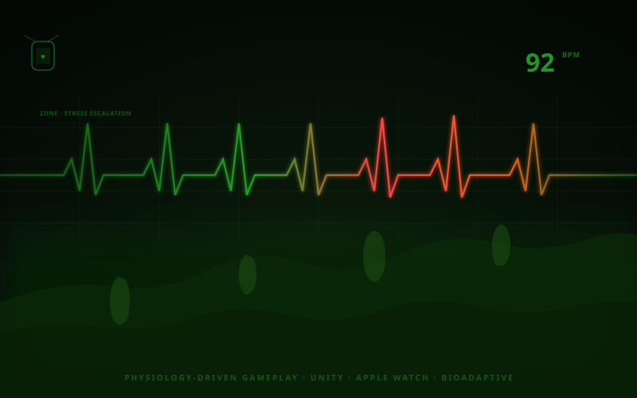

Unity · Apple Watch · Bioadaptive · 2025
Physiology-Driven
Gameplay
A Unity prototype that reads real-time heart-rate data from an Apple Watch and uses it to control the game environment — not as a health tracker, but as a design medium. The world changes because your body changes. The player is not the avatar; the player is the signal.
Core Concept
Most biometric games use health data as a difficulty modifier — you get a slower game when calm, faster when stressed. This prototype inverts the relationship: the environment doesn't respond to your stress level, it expresses it. The fog isn't an obstacle; it's you. When your heart rate climbs, the world becomes less legible, not harder.
The result is a feedback loop with no explicit feedback: you don't see a BPM readout or a stress meter. You just notice the world becoming denser, more obscured — and whether you find that alarming or calming is the game.
Technical Pipeline
Heart-rate samples are streamed from the Apple Watch to a paired iPhone via HealthKit's HKWorkoutSession, then forwarded to the Unity build over a local socket connection. On the Unity side, a biometric state manager smooths the incoming BPM signal with an exponential moving average to prevent jitter from causing erratic visual changes.
The smoothed value drives three independent environment systems: a Unity volumetric fog density parameter, a vegetation wind noise multiplier (higher rate = more instability in foliage), and a directional light temperature shift (moving from warm amber toward cold blue as BPM rises). Each system uses its own interpolation curve so the transitions feel biological rather than mechanical.
Design Notes
The prototype was built to test one hypothesis: that removing explicit feedback makes biometric interaction more interesting, not less. Players in early testing consistently misread the cause — they adjusted their in-game behavior instead of their physiology, then noticed the world reacting unexpectedly. That confusion was the intended effect.